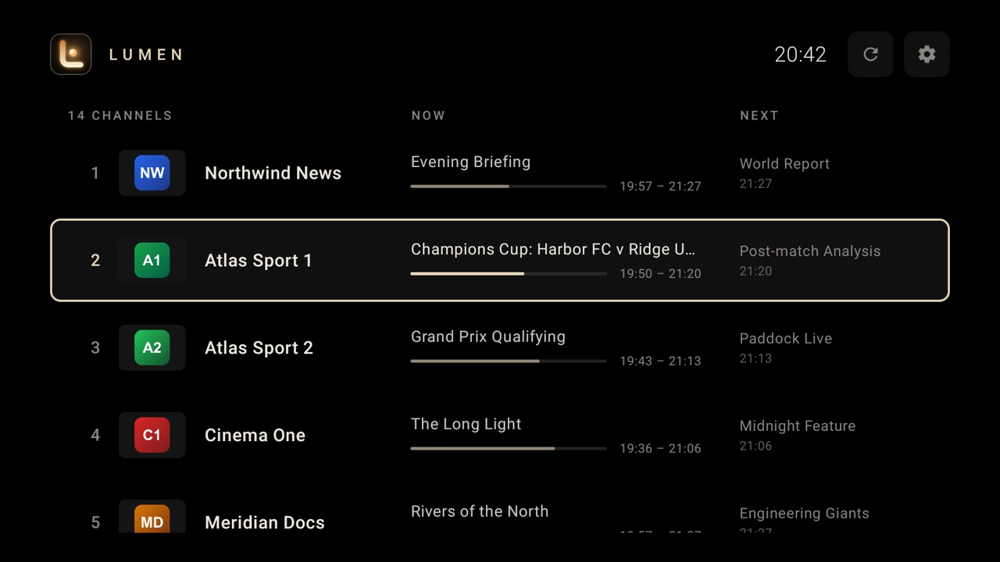
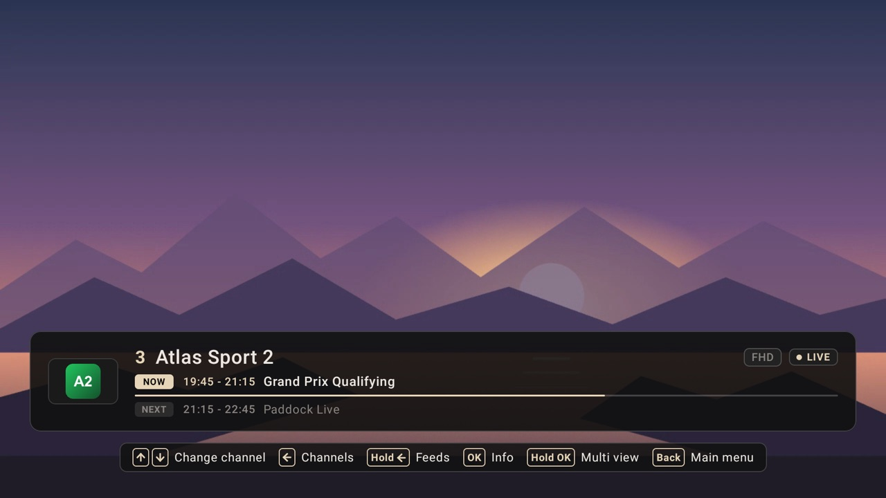
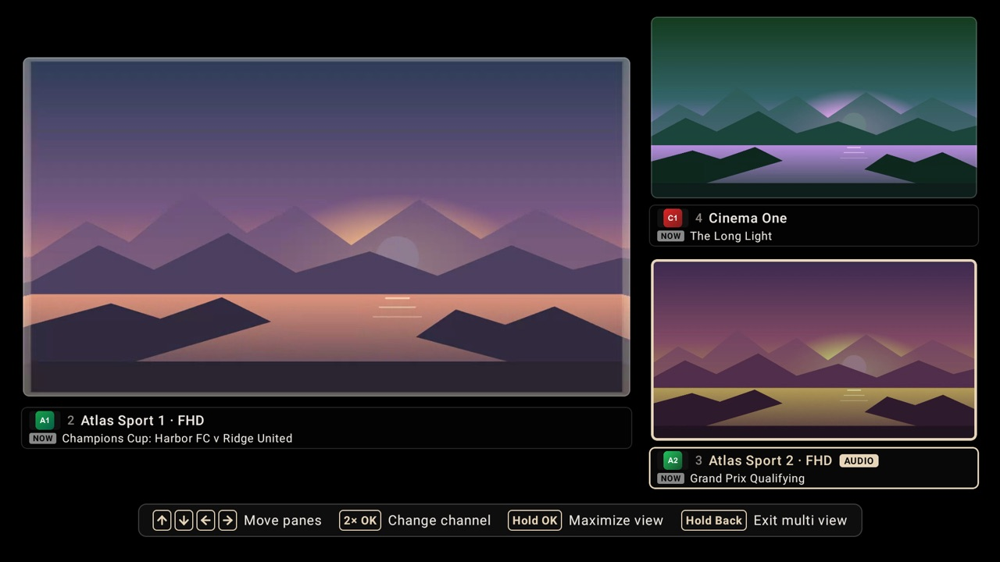
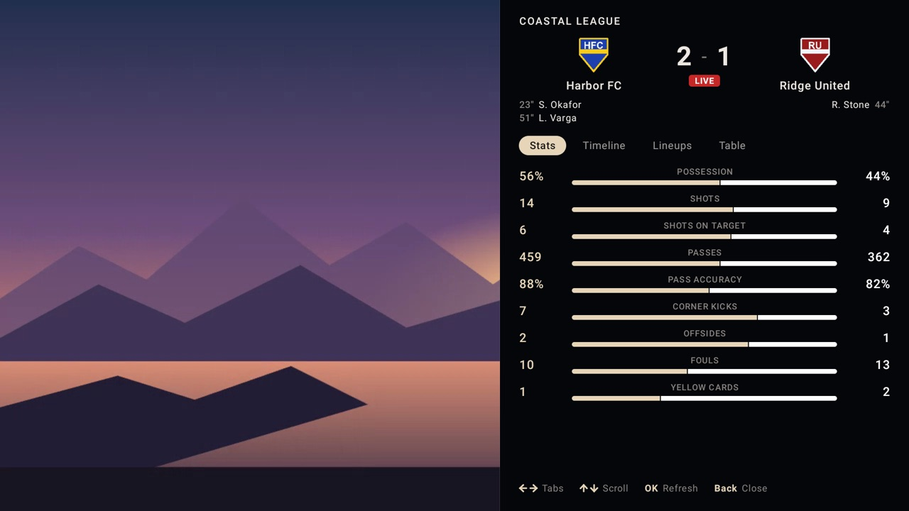
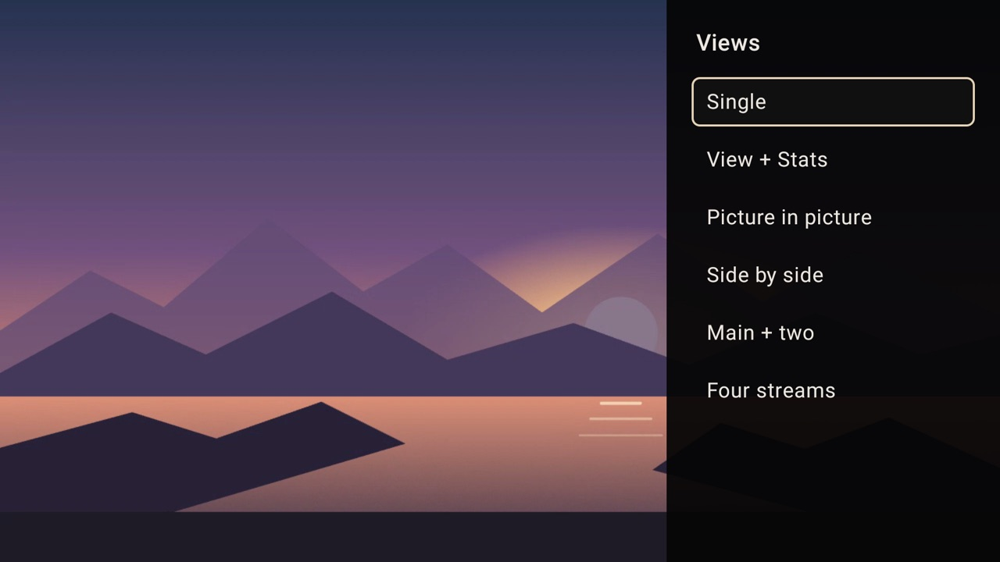
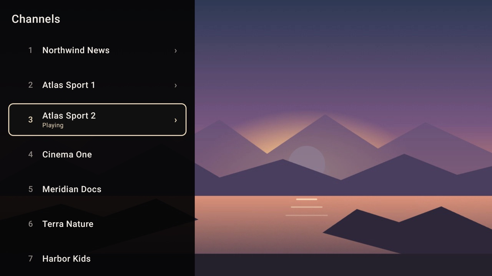
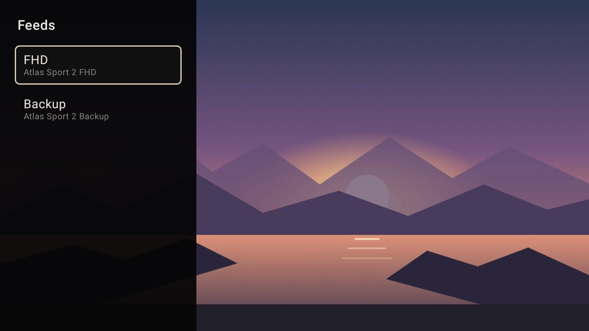
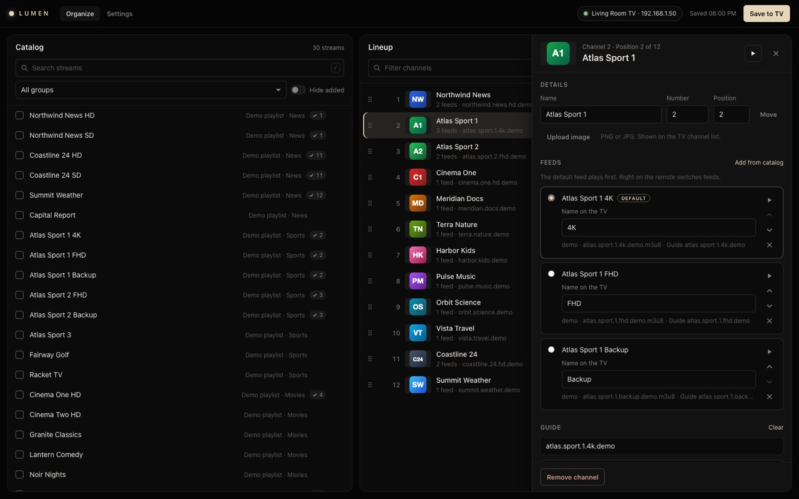

Lumen TV
Android TV · Google TV · LG webOS · Android
A privacy-first live TV player built for the remote. You curate your channels on your computer and push them to the TV over your local network, with no cloud and no accounts.
- Multi-view: up to 4 streams at once (PiP, side-by-side, main + two, 2×2)
- Live match stats: football timelines, lineups and tables shown over the video
- Zero-setup LAN discovery with a dependency-free desktop organizer
- Multi-feed failover: switch to a backup stream with one D-pad press